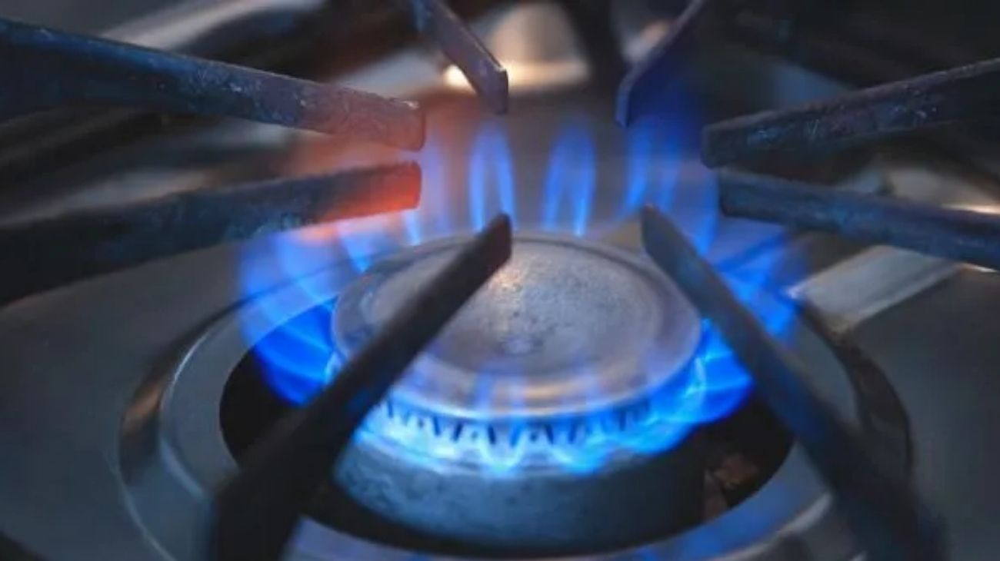

El Gobierno aumenta el subsidio al gas para mayo ante la volatilidad de los precios internacionales
A través de la Resolución 111/2026, la Secretaría de Energía elevó al 25% la bonificación adicional para los usuarios del régimen de Subsidios Energéticos Focalizados (SEF). La medida busca amortiguar el impacto de las tensiones en Medio Oriente en las facturas de hogares vulnerables y entidades de bien público.

En un contexto de creciente inestabilidad en el mercado energético global, el Ministerio de Economía, a través de la Secretaría de Energía conducida por María Carmen Tettamanti, oficializó este lunes un incremento en la asistencia estatal para el consumo de gas natural y gas propano indiluido por redes.
La Resolución 111/2026, publicada hoy en el Boletín Oficial, establece que durante el mes de mayo de 2026 los beneficiarios del régimen de Subsidios Energéticos Focalizados (SEF) —creado a finales de 2025— recibirán una bonificación adicional extraordinaria del 25%.
Puntos clave:
- Incremento: La bonificación extraordinaria sube al 25% sobre el consumo base.
- Sectores protegidos: Alcanza a usuarios de bajos ingresos, Entidades de Bien Público y Clubes de Barrio.
- Vigencia: Aplicable exclusivamente a los consumos realizados durante mayo de 2026.
El impacto del contexto global.
La Secretaría de Energía ya ha instruido al Ente Nacional Regulador del Gas (ENARGAS) para que las prestadoras del servicio realicen los cambios necesarios en los cuadros tarifarios. Se espera que el beneficio se vea reflejado en las liquidaciones correspondientes a los consumos del mes de mayo.
Con esta decisión, el Ejecutivo busca poner un tope a la presión inflacionaria de los servicios públicos en un mes clave para el consumo residencial, mientras se termina de consolidar el nuevo esquema de subsidios focalizados.